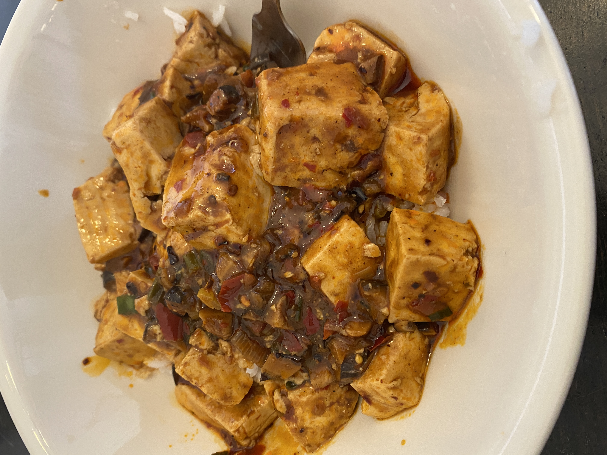

Home
Vegetarian Mapo Tofu

Description
Vegetarian mapo tofu has all of the dazzling mala umami of the original and is really easy to put together.
Ingredients
- 4 large dried shiitake mushrooms (or 6 small ones)
- 2 tablespoons Doubanjiang
- 1 tablespoon black bean sauce
- 1/4 teaspoon freshly coarsely ground Sichuan peppercorns
- 2 to 3 tablespoons peanut oil (or vegetable oil)
- 2 green onions , sliced
- 1/2 inch (2.5 cm) ginger , minced
- 2 teaspoons Shaoxing wine
- 1 cup mushroom soaking water
- 1 block (16 ounces / 450 g) soft tofu , cut into ½ inch (1.5 cm) cubes
- 1/8 teaspoon five-spice powder
- 1 teaspoon sugar (or to taste)
- 1 teaspoon cornstarch
- 1 tablespoon water
- Homemade chili oil (Optional)
Steps
- Add the dried shiitake mushrooms into a small bowl and add 1 cup hot water to cover. Let soak for 20 minutes, or until the mushrooms turn soft throughout. Squeeze out excess water and rub off any debris from the mushrooms. Finely chop the mushrooms into ¼ inch (1/2 cm) squares. Reserve the soaking water for later use.
- Combine the Doubanjiang, black bean sauce, and ground Sichuan peppercorns in a small bowl.
- Heat 2 Tablespoons oil in a large nonstick skillet over medium heat until warm. Turn to medium-low heat and add the spice mix. Cook and stir for 1 minutes.
- Add the chopped shiitake mushrooms, green onion, and ginger. Cook and stir until the aromatics are lightly browned and the oil starts to turn an orange red hue. Add more oil if the pan looks too dry.
- Pour in the Shaoxing wine and quickly use your spatula to release any brown bits from the pan.
- Pour in the mushroom soaking water, being careful not to add the debris from the bottom of the bowl.
- Add five spice powder and sugar. Mix a few times to dissolve.
- Carefully spread the tofu in the broth in a single layer. Turn to medium-high heat and bring to a simmer. Turn to medium-low heat again and simmer for 5 minutes.
- Meanwhile, make the slurry by whisking cornstarch with water in a small bowl until completely dissolved. Swirl half of the mixture into the tofu, stirring gently with a spatula. Add more until the sauce reaches the desired consistency. Taste a piece of tofu with some sauce. Add more sugar to balance the taste if it is too spicy for you. Transfer everything to a big plate.
- (Optional) If you want your dish to look like the authentic mapo tofu in Sichuan, swirl in a few tablespoons of homemade chili oil at the end of the cooking, to give the sauce a beautiful red color. It won’t affect the taste if you skip this step.
- Serve over steamed rice as a main.